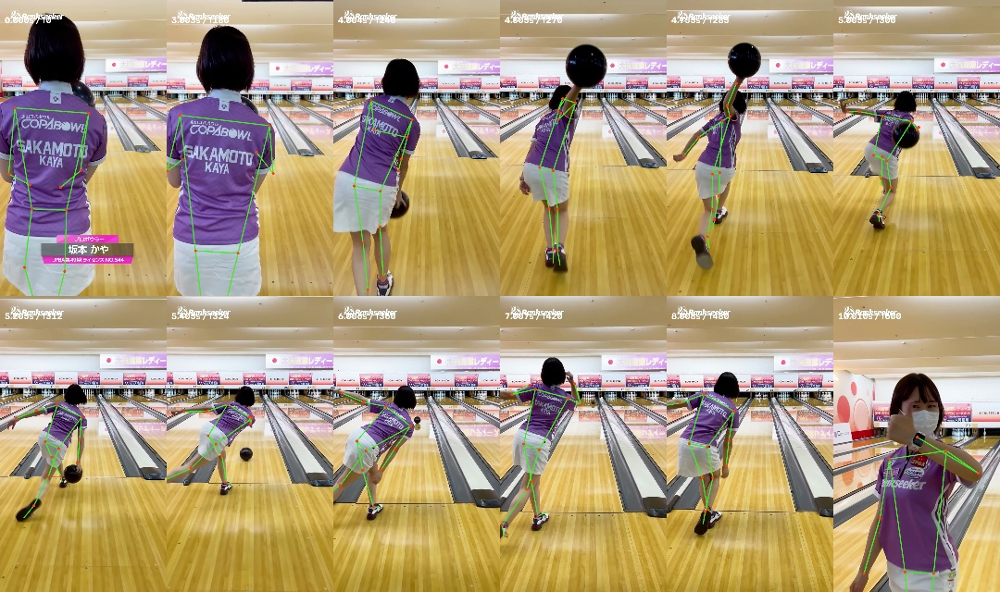

毎コマの姿勢を使う
元の657コマから33点の姿勢を取得。描画は60fpsで位置を補間し、静止画の差し替えより細かく腕・脚・胴体を動かしています。位置の一致は骨格推定の精度に依存します。
「まだ滑らかさが足りない」。そこでAstraに相談し、元の投球をコマで測って、Remotionで再構成しました。左が元映像、右がコードで描いた人型リグ。同じ時間と速度で比べられます。
約10.97秒・60fps・無音。速度変更は左右に同時に適用されます。スマホでは全画面表示も使えます。
最終13点版は、助走から高いバックスイング、低い離球、球の走行、ピン初動、フォロースルーまでを同じ時間軸で再構成できています。脚の接地や前半の隠れた関節には推定が残り、ピン個別の回転軸・跳ね方・衝突順は測定再現していません。服の変形・髪・手指・奥行き・背景の細部も実写とは一致しません。
元の657コマから33点の姿勢を取得。描画は60fpsで位置を補間し、静止画の差し替えより細かく腕・脚・胴体を動かしています。位置の一致は骨格推定の精度に依存します。
頭上スイングで左右の腕が混ざりました。Astraが元コマを見て、両腕それぞれ13点の手測定で補正。球も22点の中心と半径を測り、手から離れる前の浮きを修正しました。
姿勢の小さな揺れを7コマの窓で整え、球はPCHIP補間。9.1091秒の実際のカットで処理を分割し、前後の違う画角を混ぜませんでした。
| 手離れ | 5.2886秒では接触、5.3053秒で明白な隙間。前回の「約5.2秒」は厳密な境界ではありませんでした。 |
|---|---|
| ピン初動 | 7.9580秒まで直立、7.9746秒で最初の動き。右のピンはこの時刻より前に動かしません。 |
| 画角の切替 | 9.0924秒まで全身、9.1091秒から上半身のカット。滑らかさのためにカット自体をぼかすことはしません。 |
| 時間の長さ | 元素材は59.94fps・657コマ、映像約10.961秒。比較は60fps・658コマ、10.967秒。15秒へ引き延ばさず、元の時間軸を保ちました。 |
useCurrentFrame()に対応した測定値から決めます。
固定した計測データから右の再構成だけを描く場合は、参照動画がなくても実行できます。比較の左に入れる元動画は、使用できる素材を自分でpublic/reference.mp4へ置いてください。
cd code npm ci npx remotion render index.tsx Reconstruction out/reconstruction.mp4 --concurrency=2 # 自分の参照動画をpublic/reference.mp4へ置いた場合 npx remotion render index.tsx Comparison out/comparison.mp4 --concurrency=2
右の再構成動画を開く · 手順のMarkdown · 制作記録
今回の球軌道や投球の時刻を土台に、カピバラの身体に合う関節と奥行きへ変換する段階が必要です。この人型の計測値をそのまま絵へ渡すだけで、前回の3Dキャラクターが完全に同じ動きをするとは言えません。
次はこのRemotion再構成を動きの参照にして、カピバラとインコのキャラクターへ置き換える想定です。Google Flowの既存動画Edit（編集区間は最大10秒）を使い、3秒の「Reference video」機能とは区別します。
Flow入力候補はmotion-reference.mp4です。元映像や比較UIを含まない独自再構成で、9:16・24fps・218コマ・実長9.083333秒。助走、バックスイング、5.3秒付近のリリース、8.0秒付近のピン接触が保たれるかを確認します。ページ掲載の比較用reconstruction.mp4は全長10.966667秒です。
動画編集の案内では、既存動画の短い区間を編集し、素材を加えて追加修正する方法を説明しています。今回の候補尺は9.083333秒です。
Gemini Omniの紹介に、動画の動きや姿勢を画像キャラクターへ移す例があります。
Ajit Ingaleの制作例は、参照動画・キャラクターシート・背景を組み合わせ、姿勢と画角を確認する進め方を紹介しています。
Flowでの出力、消費クレジット、動きの一致度はまだ未確認です。生成後に実物を見て判定します。
元映像：Rankseeker掲載・坂本かやプロの投球。元と再構成の違いを検討するため、比較の左側に引用しています。音声は使用していません。
Remotion公式：フレームで動きを作る · Google公式：姿勢の計測
Remotion 4.0.532、React 19.3.0、MediaPipe 0.10.32、Python 3.12、OpenCV、SciPy、ffmpeg。Astra相談はGPT-6 Astra / xhighを指定。このRemotion比較では画像生成・Flow動画編集を使っていません。